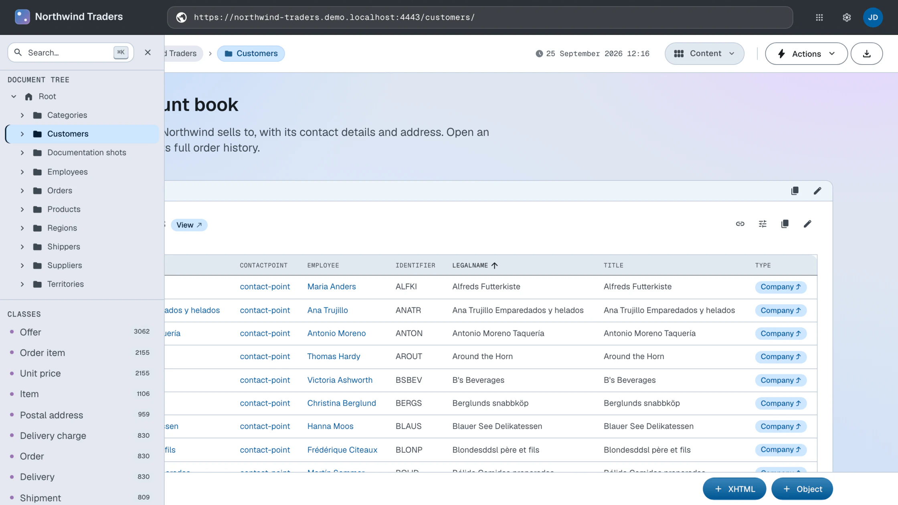
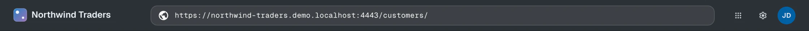
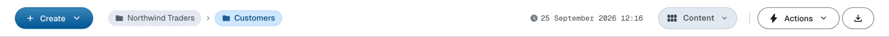
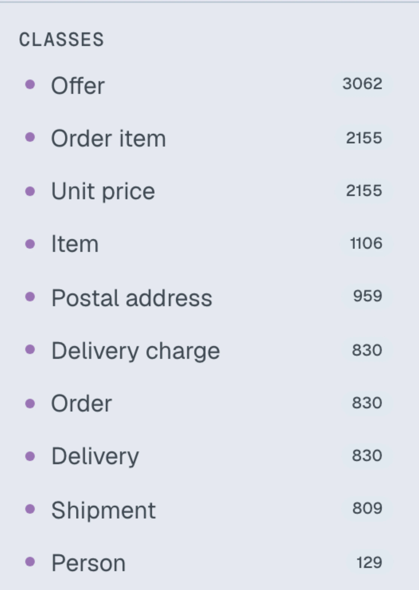
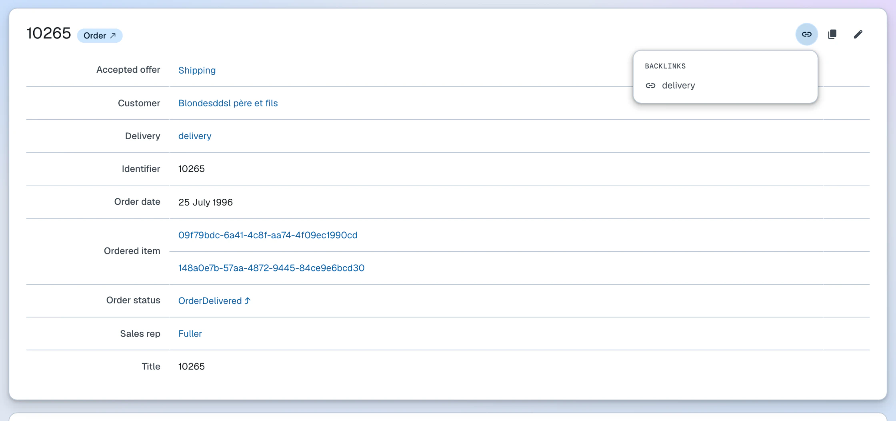
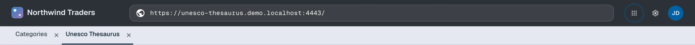

User interface
The main features of the LinkedDataHub user interface
See the Data model reference for definitions of LinkedDataHub components such as documents, content blocks, and resources.
The user interface is only one of the interfaces LinkedDataHub provides; the other is the command line interface. The ldh CLI drives the same HTTP API as the UI and covers most UI actions.
The UI layout can be customized and extended using stylesheets.
Note that user interface features are subject to access control. For example, actions such as creating or editing documents are only available to users with the corresponding write access.

Navigation bar

The dataspace title or logo in the top-left always links to the root container of the current dataspace.
The address bar in the middle accepts the URI of a resource to navigate to. Entering an external
http:// or https:// URL loads it through the Linked Data proxy so that it can be browsed within LinkedDataHub.
On the right, dropdown menus provide access to the list of dataspaces, to the settings, and to your user account. For authenticated users, the settings menu opens the dataspace settings form and links to the administration dataspace and to the dataspace's namespace ontology.
Only administration users have access to the administration dataspace.
Due to current web browser limitations, it is not possible to log out when using client certificate authentication. As a workaround, you can close the browser and click Cancel when asked to select a certificate the next time.
Action bar

The action bar below the navigation bar groups the controls of the current document into three zones.
On the left, the Create dropdown opens a dialog through which child documents can be created; it appears on containers for users with write access. To add resources or content blocks inside the current document, use the creation bar instead.
In the middle, the breadcrumb bar shows the path leading from the current document up the parent/child hierarchy to the root container, where the current document is always the last breadcrumb. The user can always open any ancestor container by clicking a breadcrumb to the left of the current one. Each breadcrumb carries an icon showing the type of its document (container or item); external resources carry a link icon. Beside them sits the document's last-modified timestamp, when it has one — and in dataspaces with versioning enabled, clicking it opens the version history dialog, which lists the document's versions with the agents that authored them.
On the right, the Actions dropdown collects the actions on the current document: Edit, Access, Save as and Delete. It appears for authenticated users, and the actions that modify the document are enabled only with write access. The same menu carries the data-generating actions for users with append access — Generate containers on end-user dataspaces, Import ontology on administration dataspaces. Beside it sit the layout mode selector and the export dropdown, which downloads the current document in the chosen RDF serialization: RDF/XML, Turtle or JSON-LD.
Left sidebar
The left sidebar is the main way to navigate your data. At the top, the search box finds resources within the current dataspace that have the specified keyword in their titles, descriptions etc.; results are shown in a dropdown list. Below the search box, the sidebar offers complementary ways to browse the dataspace — by document hierarchy, by class, and through a few other data-driven views.
The sidebar slides out over the page when the mouse is moved to the left edge of the screen and hides again when the mouse leaves it.
Document hierarchy navigation
The document tree shows the document hierarchy of the dataspace. Clicking a container expands it to show its children.
Class-based navigation

In addition to browsing by document hierarchy, you can navigate your data by class.
The Classes list shows the classes (rdf:type values) that actually occur in the dataspace, each labeled with the number of its
instances and ordered with the most-used classes first. Clicking a class opens a dialog
listing all instances of that class across the dataspace.
Class-based navigation is particularly useful when:
- You want to see all instances of a particular type across your entire dataspace
- You need to browse data organized by domain concepts rather than container structure
Because the list is derived from the data itself, it reflects whatever types are present — you do not need to define an ontology or class hierarchy. It also respects your access control settings: you only see classes and instances you are authorized to access.
Other views
Below the classes, the sidebar provides two additional data-driven views of the dataspace:
- Geo
- Opens a dialog listing all resources in the dataspace that have geographic coordinates.
- Latest
- Opens a dialog listing the most recently created resources in the dataspace, newest first.
Backlinks

Backlinks list the resources that link to a resource — that is, resources that have a property whose value is that resource. They complement the outgoing properties shown in the resource's own description.
Backlinks are per block: every block whose resource has a URI carries its own links button and popover, so in Properties mode each resource in the document offers the backlinks of that resource. The button sits among the block header's actions; XHTML blocks anchor it in the card's top-right corner, and views place it in the view toolbar. The backlink rows are loaded when the popover is first opened, and opening one popover closes the others.
For view result sets, parallax navigation plays the complementary role: it lets you jump from the current results to a related set by following a property in either direction (for example, from a set of products to the companies that supply them). It works together with the view's faceted search.
Layout modes
The active document layout mode is displayed in, and can be changed using, the mode selector in the action bar.
Currently supported document layout modes:
- Content
- List of content blocks. Shown only if the current document has items in its content list or there is a content template defined for its type.
- Properties
- The most detailed view showing every property/value of every resource in the current document.
- Map
- Shows an interactive map with all resources in the current document that have geographic coordinates.
- Chart
- Renders the resources in the current document as a chart. Several chart types are supported, including table, scatter chart and timeline.
- Graph
- Renders resources in the current document graphically as nodes in an interactive 3D network using a force-directed layout. Clicking a node shows its details, double-clicking loads the resource, and right-clicking a URI node loads its backlinks (resources pointing at it). The canvas can be toggled to fullscreen (press Esc to exit), and the graph state is preserved across search and filter re-renders.
Views have their own, larger set of layout modes.
Creation bar
The creation bar creates resources and content blocks inside the current document, while the action bar's Create dropdown creates child documents. It renders as a sticky bar docked at the bottom of the page, appears for users with append access, and serves different functions depending on the current mode:
- Content
- The XHTML and Object buttons append new content blocks to the page
- Properties
- The Create dropdown creates a new resource of the selected type
Document tabs

LinkedDataHub navigates within a single page. When you follow a link to an external document (for example a resource fetched through the Linked Data proxy), it opens in its own tab so that several documents can be kept open side by side. A sticky tab bar appears at the top of the page once the first external tab is opened.
Each tab keeps its own content pane, and modal dialogs (such as creation and edit forms) are scoped to the active tab pane. Switching between tabs is cached, so returning to a previously opened tab does not re-fetch it. Closing a tab removes its pane and falls back to the base document's tab.
Languages
The language of the user interface is negotiated from the browser's language preferences
(the Accept-Language header) against the languages the UI translation bundle ships with. There is no in-app
language switcher — the browser setting is the single source of the language preference.
If none of the preferred languages are available, the UI falls back to English.
Data is language-aware as well: property values are ordered by the reader's language preference rather than filtered by it, so values in other languages remain visible, each displaying its own language tag.